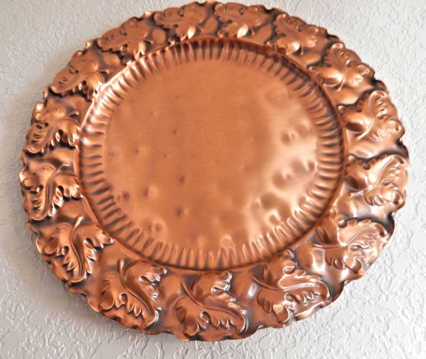

Koppar
Koppar är ett rödaktigt, halvädelt metalliskt grundämne, tillhörande myntmetallerna. Det latinska namnet cuprum betyder egentligen "metallen från Cypern". Cypern har nämligen alltid varit rikt på koppar.
Koppar finns i jordskorpan, bundet i malmerna. Det bryts därför vanligen i dagbrott som till exempel Chuquicamata i Chile, Bingham Canyon Mine i Utah, USA och El Chino Mine i New Mexico, USA.